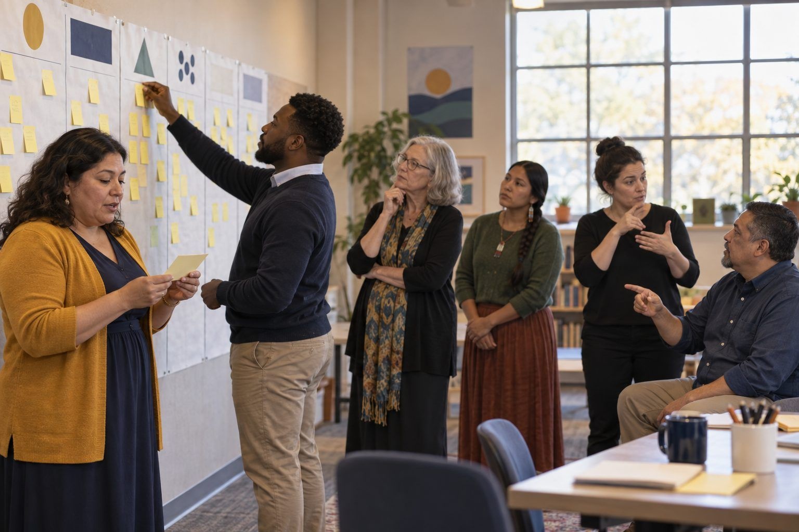

Aprendizaje profesional · Líderes, Personal, Profesorado universitario · 75 minutos
¿Quién queda excluido? Un mapa de la brecha digital
Los líderes recorren una iniciativa propuesta de tareas en línea con un tutor de IA a través de la vida de diez familias ficticias, trazan en un mapa cada barrera con la que se topan y convierten el mapa en política.
"Cada estudiante tiene un dispositivo" es donde terminan la mayoría de las conversaciones sobre equidad, y donde empieza la verdadera brecha digital. Esa brecha atraviesa la conectividad en casa, los dispositivos compartidos, la accesibilidad, los idiomas que se hablan en el hogar, los horarios de quienes cuidan a los niños, la confianza y, ahora, el costo de las herramientas de IA, cuyos niveles gratuitos y de pago pueden dar a distintos estudiantes una ayuda muy diferente. En esta sesión, los equipos toman el plan de un distrito ficticio para trasladar las tareas a internet y agregar un tutor de IA, y luego lo recorren a través de diez perfiles familiares. Cada barrera va a un mapa en la pared, y el mapa se convierte en el borrador de una política de acceso equitativo con evidencia que observar.
En este paquete
- Hoja A: La iniciativa y el distrito (lectura)
- Hoja B: Tarjetas de perfiles familiares (tarjetas para recortar)
- Hoja C: Mapa de barreras a políticas (organizador)
- Clave del facilitador (última página)
Indicadores ELE de TCEA
- L4.2 Puedo desarrollar políticas que apoyen el acceso equitativo a la tecnología y a los recursos digitales.
- L4.3 Conozco estrategias para cerrar las brechas digitales y promover el uso responsable de la tecnología.
- L1.2 Puedo desarrollar planes tecnológicos estratégicos alineados con las tendencias educativas y las necesidades de la comunidad.
- AI2.2 Puedo identificar posibles problemas éticos en las aplicaciones de IA y proponer soluciones.
Guía completa para el facilitador: mglearn.github.io/eles/es/activities/who-gets-left-out-map.html
Hoja A de ¿Quién queda excluido? Un mapa de la brecha digital
La iniciativa y el distrito
Mesquite Flats ISD y su plan son ficticios. Lea el plan tal como lo recibiría la junta escolar.
1Mesquite Flats ISD atiende a una mezcla de vecindarios: una zona suburbana en crecimiento, un centro de pueblo más antiguo con muchos complejos de apartamentos y caminos rurales de ranchos donde algunas casas están a varias millas del vecino más cercano. Las familias hablan inglés, español, vietnamita y árabe en casa. A cada estudiante de los grados 3–12 se le entrega una computadora portátil del distrito.
2La propuesta: "Tareas sin paredes". A partir de enero, todas las tareas de los grados 3–12 se asignarán y se entregarán a través de la plataforma de aprendizaje en línea del distrito. Se dejarán de usar los paquetes de tareas en papel para reducir los costos de impresión y para que los maestros puedan dar retroalimentación más rápido.
3El tutor de IA. Cada estudiante tendrá acceso a un tutor de tareas con IA generativa dentro de la plataforma, disponible las 24 horas del día. El nivel gratuito ofrece pistas y explicaciones paso a paso para hasta 20 preguntas por día. Un nivel premium, que las familias pueden comprar por una cuota mensual, ofrece preguntas ilimitadas, explicaciones por voz y traducción a idiomas adicionales.
4Apoyo. Las familias sin internet en casa pueden solicitar un punto de acceso móvil; el distrito tiene una cantidad limitada, que se distribuye por orden de llegada mediante un formulario de solicitud en línea. Hay una mesa de ayuda disponible por correo electrónico los días entre semana de 8 a. m. a 4 p. m. El plan se anunciará en el boletín del distrito y en el sitio web del distrito.
5Medidas de éxito. El distrito dará seguimiento a las tasas de inicio de sesión en la plataforma, las tasas de entrega de tareas y el uso del tutor de IA, y encuestará a las familias en línea al final del semestre.
Hoja B de ¿Quién queda excluido? Un mapa de la brecha digital
Tarjetas de perfiles familiares
Todas las familias son ficticias. Para cada tarjeta, pregunten: martes, 7 p. m., la tarea se entrega a las 11:59. ¿Qué pasa? Los reversos son preguntas guía para el facilitador.
Página 1 de 2
Familia 1
Los Nguyen. Tres hijos en los grados 4, 7 y 10. El internet de la casa es el punto de acceso del teléfono del papá, que se vuelve lentísimo después de alcanzar el límite mensual de datos. La abuela, que cuida a los niños después de la escuela, lee vietnamita pero no inglés.
Familia 2
Marcus, grado 11. Vive con su tía en un camino rural de ranchos sin servicio de banda ancha. Un punto de acceso móvil apenas agarra una rayita de señal cerca de la ventana de la cocina. Trabaja en una tienda de alimento para animales hasta las 8 p. m. tres noches por semana.
Familia 3
Aisha, grado 6. Tiene baja visión y usa ampliación de pantalla. Su familia habla árabe en casa. Le encanta la idea de un tutor que explique las cosas en voz alta, pero las explicaciones por voz son solo del nivel premium.
Familia 4
Los Garza. Cuatro hijos, cada uno con una computadora portátil del distrito, pero la del niño de 3.er grado estará en reparación durante dos semanas. La mamá trabaja de noche y duerme de día; el papá trabaja de día. No hay nadie en casa durante el horario de la mesa de ayuda.
Familia 5
Jordan, grado 9. Vive en dos hogares, una semana en cada uno. Uno tiene internet rápido; el otro no tiene. Jordan a menudo deja el cargador en la otra casa.
Familia 6
Los Park. Dos padres que trabajan en tecnología. Ya compraron el nivel premium de IA para su hijo de 8.º grado y contrataron a un tutor. Su hijo termina la tarea en la mitad del tiempo que sus compañeros.
Familia 7
Rosa, grado 5. Sus padres desconfían de la tecnología después de una filtración de datos en un empleo anterior. Han preguntado si el tutor de IA guarda las preguntas de Rosa y no están seguros de querer que lo use. El boletín no lo decía.
Familia 8
Eli, grado 7. Tiene TDAH y un plan que incluye tareas divididas en partes y revisiones periódicas. En casa, las notificaciones de la computadora portátil, los juegos y el chatbot le dificultan concentrarse en una sola tarea. Su mamá pide tareas en papel.
Hoja B de ¿Quién queda excluido? Un mapa de la brecha digital
Tarjetas de perfiles familiares
Todas las familias son ficticias. Para cada tarjeta, pregunten: martes, 7 p. m., la tarea se entrega a las 11:59. ¿Qué pasa? Los reversos son preguntas guía para el facilitador.
Página 2 de 2
Familia 9
Los Haddad. Llegaron hace poco. La familia tiene un teléfono inteligente y no sabe usar computadoras. No han creado una cuenta familiar en la plataforma y no saben que existe el formulario del punto de acceso móvil, porque está en línea y en inglés.
Familia 10
Tyler, grado 12. Este semestre vive con su mamá en un albergue. El wifi es compartido, lento y se apaga a las 10 p. m. No se lo ha dicho a nadie en la escuela.
Hoja C de ¿Quién queda excluido? Un mapa de la brecha digital
Mapa de barreras a políticas
Una fila por barrera. Marquen si la solución es una política o estrategia sistémica (P) o un acercamiento individual (A). Nombren la evidencia que observarán.
| Barrera (n.º de tarjeta de familia) | A quién más probablemente afecta | Práctica actual en el plan | Política / estrategia (P) o acercamiento (A) | Evidencia que observaremos |
|---|---|---|---|---|
| Se necesita el nivel premium de IA para la voz y la traducción (3, 1) | Estudiantes que necesitan apoyo de audio, familias multilingües | Se ofrece la compra de un nivel de pago | ||
| Mesa de ayuda solo de 8 a. m. a 4 p. m. entre semana (4) | ||||
Solo para el facilitador: ¿Quién queda excluido? Un mapa de la brecha digital
Clave de respuestas y notas
Hoja B: Tarjetas de perfiles familiares
- Familia 1
- Conectividad, idioma. ¿Quién ayuda con la tarea cuando el único adulto en casa no puede leer la plataforma ni el inglés del tutor de IA?
- Familia 2
- Conectividad, tiempo. Un punto de acceso móvil no resuelve la falta de cobertura. Aquí importan más el acceso sin conexión y las fechas de entrega flexibles.
- Familia 3
- Accesibilidad, costo, idioma. Una función que sirve como adaptación está detrás de un muro de pago. ¿Eso es acceso equitativo?
- Familia 4
- Dispositivos, tiempo. Los equipos de préstamo, los plazos de reparación y el horario de la mesa de ayuda dan por hecho un horario diurno.
- Familia 5
- Conectividad, dispositivos. Las barreras pueden cambiar de una semana a otra para el mismo estudiante.
- Familia 6
- Costo. Esta familia no enfrenta barreras, y el plan amplía la brecha entre ellos y todos los demás. Una buena política también se fija en las ventajas.
- Familia 7
- Confianza y privacidad. Las familias que optan por no participar por razones de privacidad necesitan una alternativa equivalente y una respuesta clara sobre el uso de los datos.
- Familia 8
- Accesibilidad, bienestar. Eliminar el papel suprime una adaptación de la que dependen algunas familias. El equilibrio y el tiempo frente a la pantalla son parte del acceso.
- Familia 9
- Idioma, confianza, conectividad. Un apoyo que se debe solicitar en línea, en inglés, no llega a las familias que más lo necesitan.
- Familia 10
- Conectividad, tiempo, confianza. La política debe funcionar sin que los estudiantes tengan que revelar públicamente sus dificultades. ¿Quién en la escuela lo notaría?